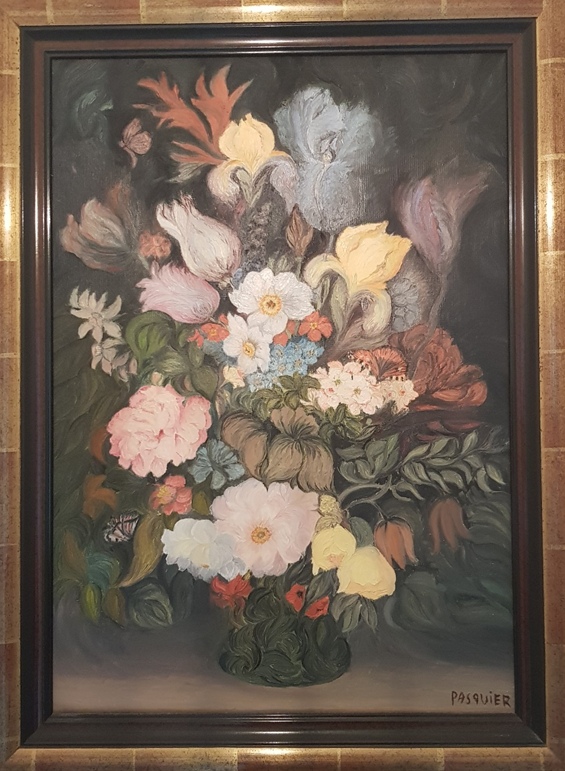

De fil en aiguille… : un métier sur plusieurs générations !
Carrefour d’échanges de tissus depuis le Moyen-Age, la ville de Cholet dans le Maine et Loire devient un centre de tissage dès le XVIIe siècle, activité exercée dans les caves semi-enterrées des maisons de tisserands exposées plein sud, pour que le tisserand puisse bénéficier de la lumière du jour le plus longtemps possible. Le métier à tisser était placé sur un sol en terre battue, pour remédier au manque d’humidité et pour que le fil ne casse pas. Plusieurs centaines de maisons d’artisans témoignent encore au cœur de Cholet de cette activité abandonnée à la fin des années 1920 avec la généralisation de l’automatisation des machines, amorcée dans toute la France 70 ans plus tôt. L’activité s’est alors diversifiée mais Cholet est néanmoins demeurée une ville de chaine et trame … avec la tradition d’origine perpétuée encore pendant plusieurs générations dans notre famille.
- Marie-Anne Bouyer naît dans ce contexte vers 1870 dans une famille aisée avec son père qui est bourrelier. Fille unique, elle commence des études qu’elle arrête, contre l’avis de ses parents, pour se marier avec Jean Perdriau et habiter à Andrezé à une quinzaine de kms de Cholet. Son mari exerce la profession de tisserand mais ne gagne que peu d’argent. Pas très heureuse (selon la tradition orale), elle décède avant le 10 juin 1903, en accouchant de son 7ième enfant. Jean Perdriau resté seul, c’est la fille ainée qui élève ses frères et sœurs. Leur père les envoyait dans les fermes chaque jour quêter des tartines de pain pour se nourrir.
- Geneviève Perdriau, née le 9 janvier 1884 à Andrezé et décédée le 31 janvier 1949 à Cholet, épouse Joseph Baron le 10 juin 1903 à Saint Pierre Montlimart. Elle exerce toute sa vie la profession de couturière à domicile, depuis les patrons modèles jusqu’à la fabrication en passant par les essayages pour les clients. Pour cela, elle s’aide d’une machine à coudre moderne de marque Singer. Réalisant des vêtements pour femmes et hommes, elle se spécialise sur la confection des vêtements hommes tels que les vestes canadiennes et les pantalons. Bien sûr, elle habille aussi toute sa famille et intéresse ses trois filles au métier.
- Geneviève Baron née le 12 février 1918 à Nyoiseau et décédée le 12 janvier 2013 à Challans, épouse Pierre Pasquier le 20 juin 1938 à Cholet. Jeune fille, elle travaille dans l’entreprise de tissage Augereau à Cholet comme couturière en linge de maison (taies d’oreiller, draps, ...). La guerre interrompt cette activité et elle se consacre alors à la fabrication des vêtements pour toute la famille. Pour ses deux enfants, Jean-Pierre et Geneviève, elle réalise des vêtements de poupées et de baigneurs. Elle excelle également dans la broderie comme les napperons, les canevas de tout motif et toute taille et le tricotage sous toutes ses formes.
- Geneviève Pasquier née le 18 juin 1949 à Nantes, obtient le même jour de 1966 (et la seule de sa classe), deux CAP de confection masculine (spécialités : pantalon et gilet-veste). Elle commence alors par coudre des pantalons dans le magasin de vêtements Brunner puis devient contrôleuse des pantalons à l’usine SNMV, tout cela à Nantes. Arrivée en 1968 à Sion sur l’Océan avec ses parents en retraite, elle travaille dans l’usine Bremaud à assembler des vêtements pour femme pour la haute couture parisienne. Après son mariage avec Jean-Marc Guillot le 3 mars 1972 à Saint Hilaire de Riez, elle effectue, un temps, les montages des pantalons à l’usine Armand Thierry et Sigrand à Aizenay où ils habitaient. Depuis, elle a conçu et fabriqué de nombreux vêtements pour la famille, y compris en tricotant, sans cesser de réparer et modifier, notamment avec sa machine à coudre Chromex, offerte par ses trois enfants et qui lui sert aussi à faire de l’initiation pour les personnes intéressées…
De la couture à la peinture
Au cours d’un été, Geneviève et Angélique, firent un stage de dessin et peinture avec un professionnel. En effet, Geneviève avait toujours aimé dessiner et Angélique montrait des dispositions naissantes dans ce domaine. A la fin, Geneviève était satisfaite mais non décidée à poursuivre l’expérience. Angélique, elle, se trouvait confortée dans ses capacités et envies, et qui se concrétiseront plus tard dans ses études d’arts appliqués et de design industriel.
Du matériel de dessin et de peinture avait été acheté exprès pour ce stage et nous restait. Geneviève, ma belle-maman, s’y intéressa et lut de nombreux livres sur les sujets de dessin et de peinture. Ainsi, à 72 ans, elle fit ses débuts dans cet art, en s’essayant, au fil du temps, aux différentes techniques pour dessiner et peindre. Ainsi, pendant 8 ans, elle réalisa des dizaines d’œuvres dont certaines sont accrochées sur les murs de plusieurs habitations.
Nous sommes restés admiratifs de ce talent révélé sur le tard et de cette envie intacte d’apprendre et de réussir. De fait, elle avait toujours été très adroite de ses mains, ce qui est indispensable par exemple pour les broderies, et elle avait trouvé à exprimer ce savoir d’une autre manière. Son coup de crayon, sa peinture et chaque résultat final nous ont enchantés !
